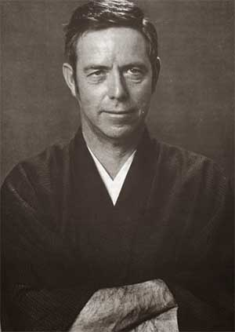

Отдельную благодарность я хотел бы выразить Диме Милевичу, кто сначала рекомендовал мне книгу Хаксли "Остров", а затем и поделился Аланом Уоттсом. Спасибо! :)
Алан Уоттс - проводник в мир восточной философии, лектор и учёный, но в первую очередь он - "боддхисатва", что означает "Будда, вернувшийся из отшельничества в мир людей". Сразу скажу, что это - последняя моя серьёзная находка, и одна из самых продуктивных. Именно знакомство с идеями буддизма, даоcизма а также их синергии, дзен-буддизма, дало мне один из самых богатых осознаниями материал и положило начало плодотворным идеям. Я упоминал восточную философию рассказывая об "Острове" Хаксли - именно эта книга показала мне возможность реализации некоторых индийских идей и практик в небольшом обществе. При желании познакомиться поближе мне посоветовали Алана Уоттса, ученика Др. Судзуки - главного ознакомителя Запада с Востоком в 60-70-80 годы прошлого столетия. Уоттс в течение своей жизни был и священником в протестантской церкви, и монахом-учеником Дзен в Японии. Понимание западной религии, а следовательно, и мышления в синергии с глубоким знакомством с восточным миром и талантом рассказчика даёт потрясающий результат. Именно этот человек иногда жёстко, иногда мягко, но всегда творчески и методично объяснял мне точки восприятия мира, до тех пор скрытые. Он годами путешествовал по миру, в основном Штатам, и давал лекции по дзен буддизму, даоcизму, буддизму, восточному образу мышления в целом, ловушкам западного мышления (аналитическая структура языка, дуализм, эго, зацикленность на словах), лекции посвященные таким аспектам реальности, как пространство и время, жизнь и смерть. Большинство этих лекций были записаны и сейчас доступны для прослушивания на ютубе или в формате аудиокниг.
Для знакомства советую начать с аудиокниги "Thusness" - своего рода интро в исторический контекст восточных мировозрений. Для прослушивания я пользуюсь приложением Scribd на телефоне. Печатные книги у Уотса тоже были, я прочитал его главный труд "Путь Дзен", а также книгу "Природа, Мужчина и Женщина". В случае дальнейшего интереса, спрашивай меня :)
Спешу сразу заметить, что располагаю цитатами лишь печатных версий его трудов. Все его аудио лекции могут быть растащены на цитаты буквально по предложениям, но этим я не занимался.
Путь Дзен (1957)
Чтобы выполнить своё назначение, имена и термины должны по необходимости, как всякая единица измерения, быть определёнными и постоянными. Но они так хорошо — в ограниченном смысле — справляются со своей задачей, что человек подвергается постоянному искушению смешать эти измерения с измеряемым миром, отождествлять деньги с богатством, зафиксированную конвенцию с изменяющейся реальностью. Однако в той мере, в какой он отождествляет себя и свою жизнь с этими косными и пустыми трафаретами-определениями, он обрекает себя на постоянное разочарование того, кто пытается набрать воду решетом. Поэтому индийская философия неустанно напоминает, как глупо охотиться за вещами, требовать постоянства от отдельных существ или явлений — во всём этом она видит лишь ослеплённость призраками, заворожённость абстрактными мерками ‘ума’ (манас).
Хуэй-нен считал, что человек с опустошённым сознанием ничем не лучше «бревна или камня». Он утверждал, что сама идея очищения ума нелепа и ложна, потому что «наша собственная природа в основе чиста и прозрачна». Значит, не может быть сравнения между сознанием (или умом) и зеркалом, которое следует протирать. Истинный ум — это ‘не-ум’ (у-синь) и его нельзя рассматривать как объект мысли или действия, как будто бы он — вещь, которую можно захватить и управлять ею. Попытки усовершенствовать свой собственный ум приводят к порочному кругу. Старания очистить его — к загрязнению чистоты. Ясно, что перед нами даосская философия естественности, согласно которой человек не может быть по-настоящему свободен, чист и непривязан, если его состояние — результат искусственной дисциплины. Чистота такого человека — поддельна, его ясное сознание — нарочито. Поэтому такие люди полны неприятного самодовольства — типичной черты сознательной и методической религиозности.
Природа, Мужчина и Женщина (1958)
Чтобы слышать, что говорят другие, человек должен молчать. Точно так же человеческий ум должен молчать, чтобы постичь что-то отличное от своих мыслей.